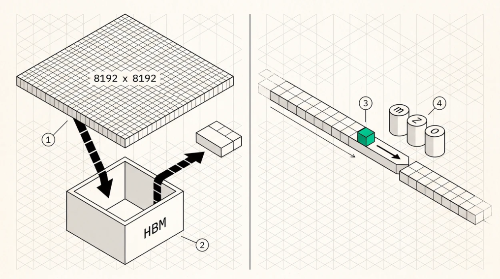

FlashAttention and Tiling
Why naive attention is slow
The textbook formulation looks harmless.
S = Q·Kᵀ # (n, n) scores
P = softmax(S) # (n, n) probabilities
O = P·V # (n, d) outputThe trouble is S and P . At sequence length 8,192 each of them holds 67 million elements per head, far too large for on-chip memory, so a naive implementation writes them to HBM and reads them straight back. For an operation whose useful output is only (n, d), that’s a catastrophic amount of traffic, and what dominates isn’t the inputs or the output but the intermediates nobody wanted in the first place.
FlashAttention (Dao et al., 2022) removes them entirely, and the key ingredient is online softmax , computing softmax without ever holding a full row of scores.
The online softmax trick
Standard softmax over a row goes
m = max(S)
P = exp(S − m) # subtract max for numerical stability
Z = Σ P
O = (P / Z) · Vwhich needs the whole row before it can start. Online softmax reformulates that as a running computation over blocks.
m_new = max(m_old, max(S_blk))
f = exp(m_old − m_new) # rescale factor for prior state
P_blk = exp(S_blk − m_new)
Z_new = f·Z_old + Σ P_blk
O_new = f·O_old + P_blk · V_blkEach block of K and V gets loaded once, consumed, and discarded. The only state carried forward is a running maximum, a running denominator, and a running output accumulator, and all three fit in registers.
The result is mathematically exact , not an approximation. The only difference from the naive computation is floating-point summation order, which produces relative differences on the order of 1e-6 when the running statistics and the output accumulator are held in FP32, as every serious implementation holds them. Round the result to FP16 at the end and the two computations agree to within a few units in the last place, around 1e-3 relative, because that’s the granularity of the format rather than an error in the algorithm.

1Naive attention materialises the score matrix. At sequence length 8,192 that is 67 million elements per head, far too large for on-chip memory.2So it goes to HBM and comes straight back. For an operation whose useful output is only the small result, the intermediate nobody wanted dominates the traffic.3The tiled version marches a block of keys and values through on-chip memory instead, consuming each block once and discarding it.4All that survives between blocks is a running maximum, a running denominator and an unnormalised output accumulator. The result is exact, not approximate.
Tiling
FlashAttention tiles the computation to fit on-chip memory. Load a block of Q rows into registers, bounded by the register file. Then for each block of K and V, load them into LDS or shared memory, compute S_blk = Q·K_blkᵀ in registers on the matrix core, update the running max and sum and output accumulator, and discard S_blk. When the K and V blocks run out, normalise the accumulator by the running sum and write O once.
HBM traffic drops to reading Q, K, and V once and writing O once, and the quadratic intermediate never exists.
Tile sizes are a hardware fit rather than a constant, with Q block size bounded by registers and K/V block size by shared memory. CDNA4’s 160 KB LDS admits substantially larger K/V tiles than CDNA3’s 64 KB, which is why AMD tiling advice written before 2025 is worth re-deriving rather than copying.
FlashAttention-2
FlashAttention-2 (Dao, 2023) restructured the algorithm around the observation that non-matmul FLOPs are disproportionately expensive on tensor-core hardware. It reduced non-matmul work by deferring the
softmax rescale out of the inner loop, parallelised over sequence length as well as batch and heads so the GPU stays full when batch × heads alone can’t fill it, and improved work partitioning between warps to cut shared memory traffic in the reduction. Roughly 2× over the original, reaching 50 to 73% of theoretical peak matmul throughput on A100.
FlashAttention-3 and after
FlashAttention-3 (Shah et al., 2024) exploits Hopper’s asynchronous hardware through TMA for asynchronous bulk copies that overlap with compute, wgmma warpgroup matrix multiply issued asynchronously so one block’s softmax overlaps the next block’s matmul, warp specialisation where producer warps move data and consumer warps compute through a pipeline rather than a barrier, and FP8 support with block quantisation and incoherent processing to keep error low. On H100 that’s 1.5 to 2.0× over FA-2, around 740 TFLOPS in FP16 at roughly 75% utilisation, approaching 1.2 PFLOPS in FP8.
The generalisable idea, and the reason this chapter matters beyond attention, is three-way overlap . While block i ’s matmul runs, block i+1 ’s data is in flight and block i−1 ’s softmax is being updated. Any kernel with a load, compute, reduce structure can be organised that way, and on hardware with asynchronous copy engines it’s usually the difference between 40% and 75% of peak.
FlashAttention-3’s specific mechanisms are Hopper-specific. On CDNA4 the equivalent structure gets built from asynchronous global-to-LDS copies, MFMA pipelining, and explicit multi-buffering, expressed through Composable Kernel, AITER, or Triton rather than TMA and wgmma . The structure transfers, the instructions don’t.
What this means for decode
FlashAttention was designed for prefill, where there are many query rows to parallelise over. In decode there’s exactly one query row per sequence, so FlashAttention’s parallelisation yields one workgroup per head, nowhere near enough to fill a 256-CU GPU.
The decode variant is FlashDecoding , which is the next chapter, and it parallelises over the KV cache instead. The mathematics is identical, online softmax with no materialised score matrix and tiles sized to on-chip memory. Only the parallelisation axis changes.
Why partial results merge exactly
Online softmax works because softmax admits an exact merge of independently computed partial results. Given two blocks with partial state (m₁, Z₁, O₁) and (m₂, Z₂, O₂),
m = max(m₁, m₂)
Z = e^(m₁−m)·Z₁ + e^(m₂−m)·Z₂
O = (e^(m₁−m)·O₁ + e^(m₂−m)·O₂) / Zwhich is associative and commutative, and that’s exactly what makes both FlashAttention’s sequential merge and FlashDecoding’s parallel merge correct. It’s also why the merge can happen in any order, which the tree reduction in the next chapter depends on.
One numerical detail matters here. The accumulator O stays unnormalised until the very end, and implementations that normalise per block accumulate rounding error and lose the exactness property.
Key Concept
FlashAttention is the algorithmic foundation of efficient attention. Online softmax means you never need the full score matrix, tiling keeps working data on chip, and the mathematics is exact rather than approximate. Its partial results merge associatively, which is what makes parallel decode attention possible at all. FlashAttention-3’s real lesson is structural, three-way overlap of load, matmul, and softmax, and that structure transfers to any hardware with asynchronous copy even though its instructions don’t.
Exercises
Show that the merge formula above is associative, and explain why normalising the output accumulator per block would break exactness.
For head dimension 128 in FP16, compute the largest K/V tile that fits in 64 KB of LDS and in 160 KB. How does the change affect the number of passes over Q?
Naive attention at S = 8,192 writes and reads the score matrix. Estimate its HBM traffic per head and compare with FlashAttention’s. At what sequence length does the intermediate traffic exceed the Q, K, V traffic?
Build: implement online softmax in f64 on the host and verify against a naive softmax to 1e-12 on random inputs including large-magnitude outliers. This reference is the oracle you’ll use in Chapter 36.